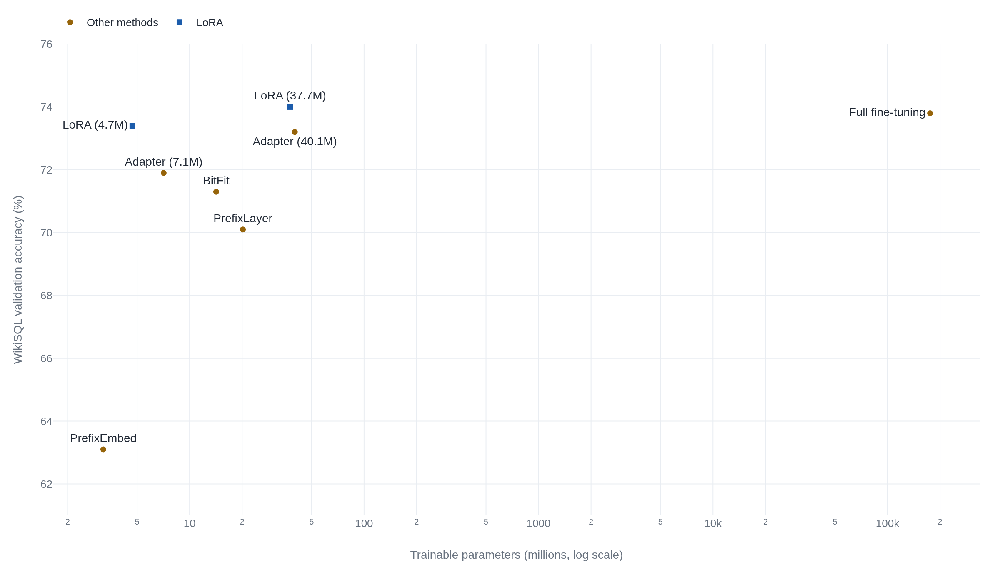

LoRA shrinks a fine-tuned GPT-3 checkpoint from 350GB to 35MB
By freezing the pretrained weights and training a low-rank update to the attention projections, it matches full fine-tuning where the two were compared, and costs nothing extra at inference once the update is merged back in.
LoRA: Low-Rank Adaptation of Large Language Models
Read the paperAn important paradigm of natural language processing consists of large-scale pre-training on general domain data and adaptation to particular tasks or domains. As we pre-train larger models, full fine-tuning, which retrains all model parameters, becomes less feasible. Using GPT-3 175B as an example — deploying independent instances of fine-tuned models, each with 175B parameters, is prohibitively expensive. We propose Low-Rank Adaptation, or LoRA, which freezes the pre-trained model weights and injects trainable rank decomposition matrices into each layer of the Transformer architecture, greatly reducing the number of trainable parameters for downstream tasks. Compared to GPT-3 175B fine-tuned with Adam, LoRA can reduce the number of trainable parameters by 10,000 times and the GPU memory requirement by 3 times. LoRA performs on-par or better than fine-tuning in model quality on RoBERTa, DeBERTa, GPT-2, and GPT-3, despite having fewer trainable parameters, a higher training throughput, and, unlike adapters, no additional inference latency. We also provide an empirical investigation into rank-deficiency in language model adaptation, which sheds light on the efficacy of LoRA. We release a package that facilitates the integration of LoRA with PyTorch models and provide our implementations and model checkpoints for RoBERTa, DeBERTa, and GPT-2 at https://github.com/microsoft/LoRA.1
The bill for a second full copy of GPT-3
Fine-tuning a pretrained model the ordinary way retrains every weight. The result is a new model the same size as the original, and if you fine-tune GPT-3 175B for ten downstream tasks you own eleven copies of 175 billion parameters. Storing one such copy in half precision takes 350 gigabytes, and every task you serve needs its own. Full fine-tuning does not scale in the number of tasks, and that is the problem the paper opens on.1
The escape depends on a wager about what fine-tuning actually changes. A prior result had measured it directly. Aghajanyan and colleagues found that a pretrained language model can be steered to most of its fine-tuned quality by optimizing a tiny number of parameters projected into the full weight space: 200 trainable parameters were enough to reach 90% of full-parameter performance on the MRPC sentence-pair task with RoBERTa.2 If the useful part of an adaptation lives in so few directions, the full weight update carries mostly redundant numbers. LoRA takes the bet literally and constrains the update to be low-rank from the start.1
A weight update the size of two thin matrices
Take one weight matrix inside the model, a projection that maps an input of dimension k to an output of dimension d. Fine-tuning wants to add an update to it, and an unconstrained update has one number for every entry of the matrix: d times k of them, the full size of the weight. The low-rank construction replaces that update with a product of two much smaller matrices. The first, call it A, has r rows and k columns. The second, B, has d rows and r columns. Multiply them and the result BA is again d by k, the exact shape of the weight, but it was built from only r(d + k) free numbers rather than d times k. When r \ll \min(d, k), that is a small fraction of the full count.
The value r is the rank of the update, and it is the one dial the method exposes. It sets how many independent directions the update is allowed to move the weight along, and nothing else about the construction changes when you turn it. The forward pass keeps the frozen weight and adds the low-rank term beside it.1
- W_0The pretrained weight, frozen at its trained value and never updated. Shape d by k.
- BThe second factor, shape d by r, initialized to all zeros.
- AThe first factor applied to the input, shape r by k, initialized from a random Gaussian.
Reading the line in order: the input x hits the frozen weight and, in parallel, passes through A, which squeezes it down to r numbers, then through B, which expands those r numbers back out to the output dimension. The rank r is a bottleneck the whole update must pass through. Widen it and the update can express more; narrow it and it can express less and costs less to train.
Training that begins exactly at the pretrained model
Two choices about how the update starts and how it is scaled decide whether the construction is usable, and both are worth slowing down for. The first is initialization. A is drawn from a random Gaussian, and B is set to all zeros. Their product BA is therefore zero at the first training step, so the model at step zero is exactly the pretrained model, unperturbed. Training departs from the original weights rather than from a random dent in them, and the adaptation only ever adds what the downstream task demands.1
The second is the scaling. The update is multiplied by \alpha / r before it is added to the frozen weight, where α is a constant the authors fix to the first r they try and then leave alone. Dividing by r means that raising the rank does not also inflate the typical size of the update, so the learning rate that worked at one rank keeps working at another. The scaling exists to spare you a hyperparameter search every time you change the dial.1
The pairing of zero-initialized B and Gaussian A is the hinge. It is what lets a randomly initialized module attach to a trained network without damaging it on contact, and it is why the very first gradient step is a clean departure from the pretrained weights rather than a recovery from noise.
Adapt the attention projections, freeze the rest
A transformer layer has six weight matrices worth adapting: four in the self-attention module (the query, key, value, and output projections Wq, Wk, Wv, Wo) and two in the feed-forward MLP. The paper adapts only attention weights and freezes the MLP entirely. This is a choice of study scope, made for simplicity and parameter budget, not a claim that the MLP cannot be adapted; the authors explicitly leave adapting the MLP, LayerNorm, and bias terms to future work.1 Later practice adapts the MLP routinely, so read the paper's scope as the boundary of what it measured, not the boundary of the method.
Within that scope, the paper asks a sharp question: given a fixed parameter budget, is it better to spend it on a large rank for one matrix or a small rank spread across several? On GPT-3, holding the budget at roughly eighteen million parameters, the answer is consistent. Adapting one projection at a higher rank trails adapting two at a lower rank, and adapting both the query and value projections is the best pairing.1
| Adapted matrices | Rank | WikiSQL | MNLI-m |
|---|---|---|---|
| Wq | 8 | 70.4 | 91.0 |
| Wk | 8 | 70.0 | 90.8 |
| Wv | 8 | 73.0 | 91.0 |
| Wo | 8 | 73.2 | 91.3 |
| Wq, Wk | 4 | 71.4 | 91.3 |
| Wq, Wv | 4 | 73.7 | 91.3 |
| Wq, Wk, Wv, Wo | 2 | 73.7 | 91.7 |
The query projection alone at rank 8 reaches 70.4 on WikiSQL; the query and value together at rank 4, on the same budget, reach 73.7. Spreading a smaller rank across more matrices beats concentrating a larger rank on one. The working recommendation the paper settles on is to adapt Wq and Wv at a modest rank.
Fold the update back in and inference costs nothing
Because BA has the same shape as the weight it corrects, it can be added into that weight. At deployment you compute W = W0 + BA once, store the single merged matrix, and run inference exactly as you would run the original model. The extra matrices vanish into the weight they were correcting, and the forward pass has the same shape and the same cost as an ordinary fine-tuned model. The paper states the guarantee plainly: LoRA introduces no additional inference latency compared to a fine-tuned model, by construction.1
This is where LoRA separates from the adapter methods it competes with. An adapter inserts small extra layers into the network, and those layers stay in the forward path at inference, adding real time. The paper measures it on GPT-2 medium: a single forward pass at batch size one and sequence length 128 takes 19.8 milliseconds with no adapter, and inserting adapters pushes that to 23.9 or 25.8 milliseconds depending on the variant, a penalty of 20.7% and 30.3%. LoRA adds nothing to the same measurement because after merging there is nothing extra to run.1
The zero-latency guarantee is real but conditional, and the same paper names the condition. Merging bakes one task's update into the weights, so serving a different task means recovering the original weight by subtracting BA and adding a different task's update, a cheap swap for whole-model serving but not a per-request one. If you want to run many tasks' adapters side by side in a single batched forward pass, you keep them unmerged, and then the update is an extra matrix multiply again. Zero added latency and per-sample task switching in one batch are not both available at once, and the paper flags the tradeoff directly.1
What the low-rank bet actually saves
Return to GPT-3 175B and put the running numbers on one screen. With rank 4 and only the query and value projections adapted, LoRA trains 4.7 million parameters against full fine-tuning's 175.3 billion. The checkpoint you save per task is the update alone, which drops the saved artifact from 350 gigabytes to 35 megabytes, the 10,000-fold reduction in the abstract. Training-time memory falls too, because the optimizer no longer keeps gradient and momentum state for frozen weights: VRAM during training goes from 1.2 terabytes to 350 gigabytes.1
The saving would be worthless if quality collapsed, and it does not on the tasks the paper ran. Plotting each method's GPT-3 accuracy against the number of parameters it trains puts the claim on one axis. LoRA at 4.7 million parameters lands at the same accuracy as full fine-tuning at 175.3 billion, four and a half orders of magnitude to its left, and above the adapter and prefix-tuning baselines that spend more.1

The pattern holds across the paper's smaller benchmarks. On GLUE with RoBERTa and DeBERTa, LoRA matches or edges full fine-tuning while training roughly two-tenths of a percent of the weights; on the E2E generation task with GPT-2, it beats full fine-tuning on BLEU at under a thousandth of the trainable parameters.1
The design also composes downward. QLoRA holds the pretrained weights frozen in 4-bit precision and trains the same low-rank update through them, which cuts the memory to finetune a 65-billion-parameter model from more than 780 gigabytes to under 48, a single GPU, while preserving full 16-bit finetuning quality.3 The freeze-and-inject core is what makes that stacking possible: if the base weights never move, their numerical precision is free to drop.
Why a rank of one is often enough
The intrinsic-dimension result told the authors to expect a low rank to work; their own ablation says how low. On GPT-3, sweeping the rank of the query-and-value update from 1 up to 64 barely moves accuracy on either WikiSQL or MNLI. A rank of 1 already suffices for adapting both Wq and Wv on these datasets, and 64 buys essentially nothing more.1 That flatness is the direct evidence for the low-rank hypothesis: if the useful adaptation needed many directions, widening the bottleneck would keep paying, and it does not.
Guard the reach of that finding, because the paper does. It is measured on two datasets with GPT-3, tasks close to the model's pretraining, not a law for every adaptation. The authors keep the boundary explicit in a footnote.
we do not expect a small r to work for every task or dataset. Consider the following thought experiment: if the downstream task were in a different language than the one used for pre-training, retraining the entire model ... could certainly outperform LoRA with a small r.1 Hu et al. 2021, footnote 6
The paper also offers a mechanism for why the low-rank update helps at all, and it is honest about how thin that evidence is. Comparing the learned update against the frozen weight on the 48th layer of GPT-3, the authors find the update does not repeat the weight's dominant directions. It picks out directions the pretrained weight had left weak and amplifies them, by a factor of about 21.5 at rank 4.1 The reading is appealing: adaptation turns up features the general model already contained but underused. It rests on one layer of one model, so treat it as a suggestive account of the mechanism, not a proof of it.
Where full fine-tuning still wins
The paper's headline, LoRA on-par with full fine-tuning, is true in the regime it tested and needs a boundary drawn around it. A later head-to-head study by Biderman and colleagues, a team with no stake in the original result, supplies the boundary. On programming and mathematics, across both instruction tuning and continued pretraining on twenty billion tokens, they find that in the standard low-rank settings LoRA substantially underperforms full fine-tuning.4 These are hard target domains far from the model's pretraining, exactly the different-from-pretraining case the LoRA authors' footnote warned a small rank would fail.
The same study measures why. Full fine-tuning learns weight perturbations with a rank 10 to 100 times higher than typical LoRA configurations, which plausibly accounts for the gap.4 The two results do not contradict each other. LoRA's own tests sit close to pretraining, where the useful update is genuinely low-rank and a small r captures it. Biderman's tests sit far from it, where the useful update is high-rank and a small r cannot reach it. The intrinsic rank of the adaptation is what decides which regime you are in, and it is a property of the task, not of the method.
Biderman also reports the compensating result, which is why the choice is a tradeoff and not a verdict against LoRA. The frozen base keeps LoRA closer to the original model's behavior on tasks outside the target domain, so it forgets less than full fine-tuning and less than weight decay or dropout hold back.4 Constraining the update to be low-rank costs capacity on hard, out-of-distribution targets and buys stability on everything else.
LoRA earns its default status. The mechanism is sound, the cost saving is real and large, and the quality claim holds where the paper made it, on tasks near pretraining that admit a low-rank update. Read the headline with its regime attached. When the adaptation must be high-rank, code and mathematics being the demonstrated cases, full fine-tuning's higher-rank updates still win, and the rank you can afford is the knob that decides between them.4
Sources
- Hu, Shen, Wallis, Allen-Zhu, Li, Wang, Wang, Chen · "LoRA: Low-Rank Adaptation of Large Language Models" (Microsoft, 2021)
- Aghajanyan, Zettlemoyer, Gupta · "Intrinsic Dimensionality Explains the Effectiveness of Language Model Fine-Tuning" (2020)
- Dettmers, Pagnoni, Holtzman, Zettlemoyer · "QLoRA: Efficient Finetuning of Quantized LLMs" (University of Washington, 2023)
- Biderman, Portes, Gonzalez Ortiz, et al. · "LoRA Learns Less and Forgets Less" (Databricks / Columbia, 2024)